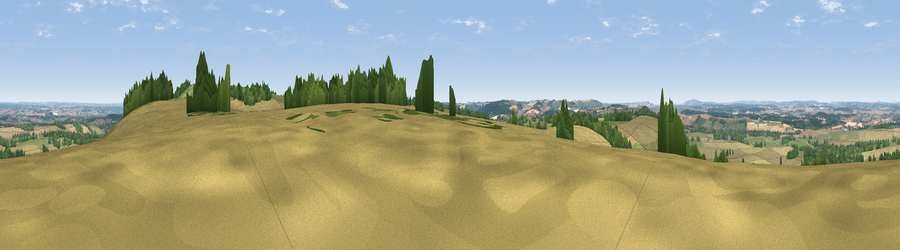

Viewpoint near Ham
#10085 in England · top 12% of its area beats it · near Ham · path 121 mWhere it is
The exact computed spot (SU 33675 61775). Click the marker for map links.
Public access: the nearest public right of way is about 121 m away — the final stretch may cross private land. Computed from Natural England's CRoW access layer and OpenStreetMap rights of way — not the legal definitive map. Always verify locally.
The view, rendered

A 360° render of this exact spot computed from the terrain model, tree cover and land cover — summer colours, afternoon light, calibrated against photographs of famous viewpoints. Real trees, hedges and buildings will differ in detail.
The panorama
Grey silhouette: terrain skyline in each direction (720 bearings, Earth curvature and refraction included). Dashed green: skyline with trees (+15 m) and buildings (+8 m) as obstacles. Blue strip: how far the ground is visible on each bearing.
Where the view opens
Wedge length = distance to the farthest visible ground on that bearing (vegetation-aware). Rings at 10, 25 and 50 km.
What fills the view
60% cropland · 26% grassland · 14% woodland
Angular shares of the visible panorama (visual magnitude), not map area. Landscape diversity 0.41 (0–1 Shannon).
Key numbers
More beautiful places nearby
The staircase of upgrades: each row has a higher view potential than everything closer. Driving times are estimates from straight-line distance, calibrated against real road routing — check an actual route before setting out.
| Place | Direction | Drive | Score |
|---|---|---|---|
| Viewpoint near Ham | ENE · 0 km | ~2 min | 65.9 |
| Viewpoint near Ham | ENE · 1 km | ~3 min | 67.2 |
| Inkpen Hill | E · 2 km | ~5 min | 69.8 |
| Gallows Down | E · 3 km | ~7 min | 75.6 |
| Beacon Hill | ESE · 13 km | ~24 min | 76.7 |
| Martinsell viewpoint | W · 16 km | ~28 min | 76.9 |
| Viewpoint near Buriton | SE · 56 km | ~78 min | 80.0 |
| Beacon Hill | SE · 64 km | ~87 min | 85.8 |
51.35406, -1.51780 · source: screening · position refined by local search. Computed location — check access rights before visiting.